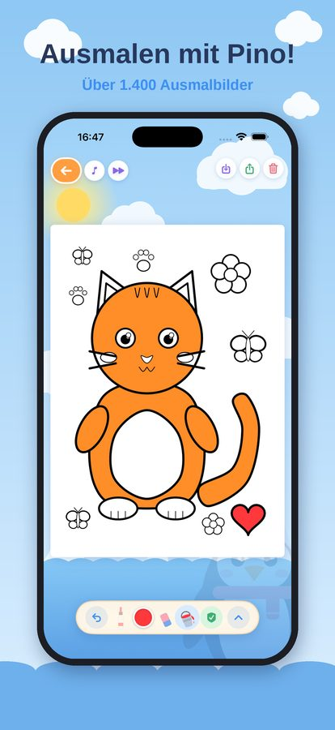
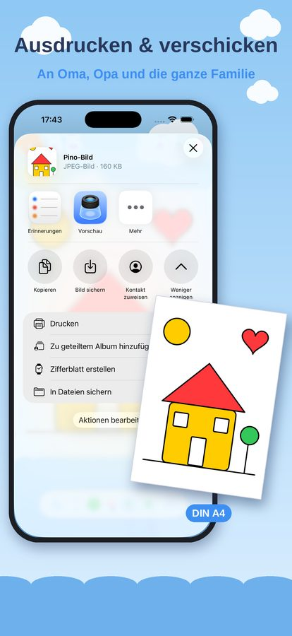

Pino malt
Malen und Ausmalen mit Pino, dem kleinen Pinguin – auf echtem DIN-A4-Blatt, ohne Werbung.
Im App Store ladenMalen und Ausmalen mit Pino, dem kleinen Pinguin – auf echtem DIN-A4-Blatt, ohne Werbung.
Im App Store laden


Kinder im Kindergarten- und Grundschulalter
iPhone und iPad (ab iOS 16) · 12 Sprachen
Keine Werbung · kein Konto · kein Tracking
Preise in Euro für Deutschland; in anderen Ländern zeigt der App Store den Landespreis. Abos verlängern sich automatisch und lassen sich jederzeit in den Einstellungen deiner Apple-ID kündigen.
Verantwortlich: Alexander Matthias Müller – Perlage Apps, Barnefeldstraße 12E, 31515 Wunstorf, Deutschland, E-Mail: info.perlage-apps@web.de. Du hast das Recht auf Auskunft, Berichtigung, Löschung, Einschränkung und Widerspruch (Art. 15–21 DSGVO) und kannst dich bei einer Aufsichtsbehörde beschweren, z. B. bei Die Landesbeauftragte für den Datenschutz Niedersachsen, Prinzenstraße 5, 30159 Hannover. Stand: November 2026.
Oben links auf das Zahnrad tippen und die kleine Rechenaufgabe lösen.
iCloud-Abgleich im Elternbereich eingeschaltet lassen. Auf allen Geräten mit derselben Apple-ID erscheinen dann Profile und Bilder.
Im Elternbereich „Käufe wiederherstellen“ tippen. Mit Familienfreigabe gilt der Kauf für alle Familienmitglieder.
Im Elternbereich das Teilen einschalten und Oma als Empfängerin eintragen. Danach wählt das Kind beim Bild einfach Oma aus.
In den iPhone- oder iPad-Einstellungen → dein Name → Abonnements → Pino malt. Kündigen spätestens 24 Stunden vor Ablauf.
Noch eine Frage? Schreib uns: info.perlage-apps@web.de